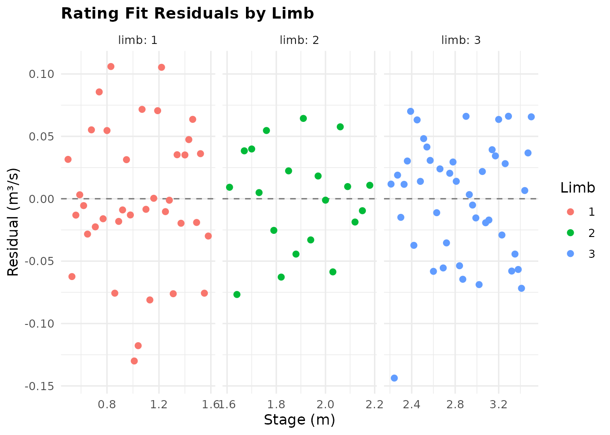
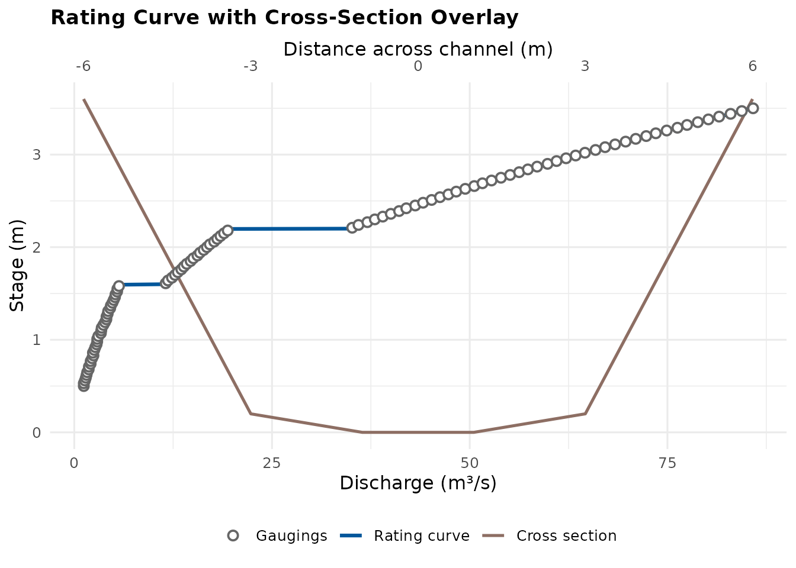
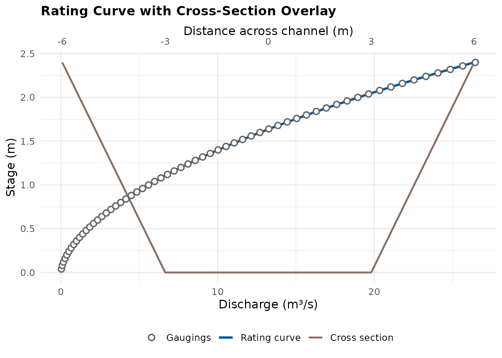
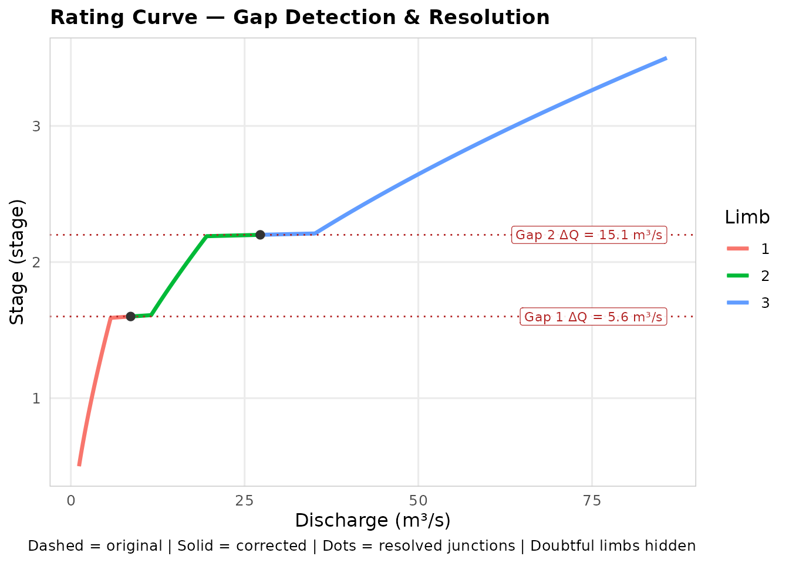
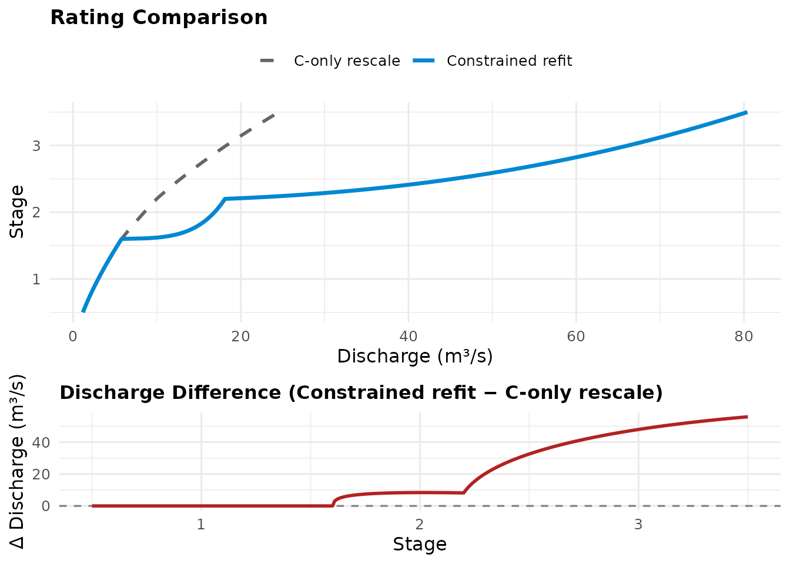
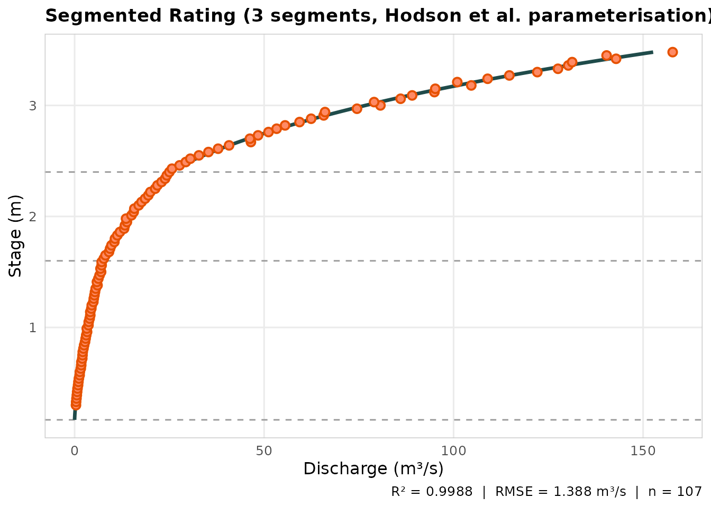
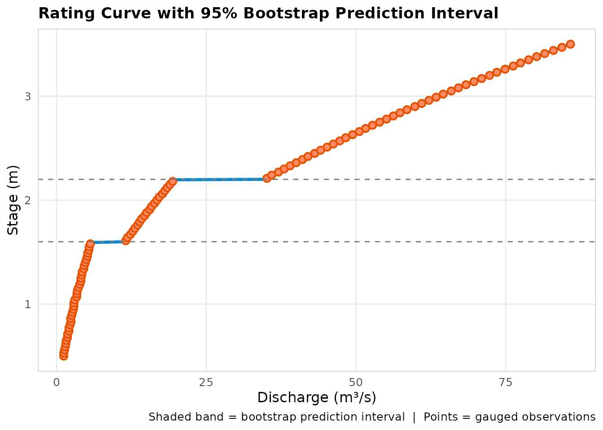
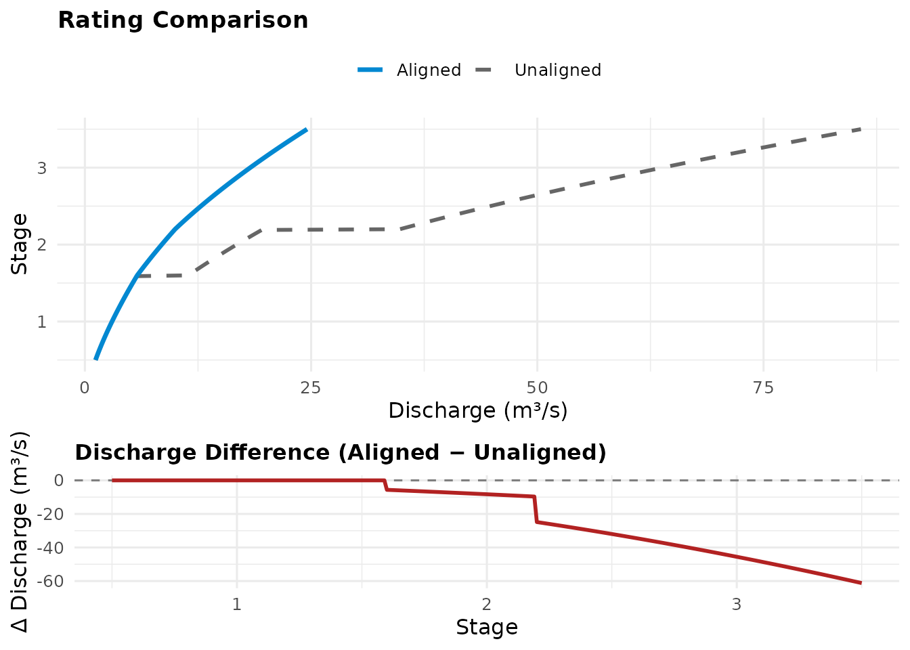

Rating Curves: Theory, Functions, and Guidance
Jonathan Payne, Environment Agency Flood Forecasting
August 2026
Source:vignettes/rating_curves_guide.Rmd
rating_curves_guide.RmdWhat a rating curve is
A river gauging station measures water level continuously. It does not measure flow. Level (stage) is cheap: a pressure transducer or a float in a stilling well, logging every fifteen minutes for decades. Flow (discharge) is expensive: someone has to stand in or above the river with a current meter or an ADCP and measure it directly. A single discharge measurement is called a gauging, and a typical station accumulates a few dozen to a few hundred of them over its life.
The rating curve is the bridge between the two. It is a fitted relationship that converts the continuous stage record into a continuous discharge record, calibrated against the occasional gaugings. Every flow statistic you have ever used from a gauging station, every QMED, every flood peak in HiFlows, passed through a rating curve on its way to you. The quality of the rating bounds the quality of everything downstream of it.
The equation
This toolkit fits the standard hydrometric form:
where is discharge (m³/s), is stage (m), and , , are fitted coefficients. The offset deserves a moment. Stage is measured against an arbitrary local datum, not against the point where flow actually ceases. The quantity converts stage to effective head above the level of zero flow, and it is head, not raw stage, that drives flow through a control. When the river is below its zero-flow level and by definition.
Why a power law
The power law is not a curve-fitting convenience. It is what open-channel hydraulics predicts. Flow over a rectangular weir goes as head to the power 1.5; over a V-notch, head to the power 2.5; Manning’s equation for a wide channel gives discharge roughly as depth to the power 5/3. Every common control produces discharge as head raised to some exponent between about 1.3 and 2.5, with absorbing the geometry and roughness (Herschy 2009; Rantz et al. 1982). Fitting is fitting the family of curves the physics says to expect.
A useful property follows: on log axes the power law is a straight line,
with slope . This is why hydrometrists have plotted ratings on log-log paper for a century, and why a change of slope on that plot signals a change of physical control.
A convention
Throughout this toolkit, plots put discharge on the x axis and stage on the y axis. This is the hydrometric convention: the rating is read the way the station uses it, from a measured stage across to a discharge. Every plotting function here follows it, including the cross-section demonstration, so the curves are directly comparable.
Why ratings have limbs
A single power law describes a single control. Real channels change control as they fill. At low flow the station may be controlled by a gravel riffle or a weir crest immediately downstream (a section control). As stage rises the riffle drowns out and the friction of the channel itself takes over (channel control). Higher still, the river tops its banks and the floodplain begins to convey flow, changing the effective geometry entirely.
Each regime approximates a different power law. The standard response is a multi-limb rating: the stage range is split at breakpoints, and each limb gets its own , , . The breakpoints should correspond to real physical transitions, a berm, a bank top, a bypass channel activating, and choosing them is a hydrological judgement, not a statistical one. Section 5 returns to this.
The objects
The toolkit represents its results as three S7 classes rather than
bare tables. The practical consequence for you as a user is small: you
access contents with @ rather than $, and the
objects carry more than numbers.
FlodeRating is the result of
rate_optimise(). @limbs holds one row per limb
(bounds, coefficients, diagnostics), @gaugings holds the
data it was fitted to, @bootstrap and
@fit_starts hold uncertainty and fitting bookkeeping when
produced, @status records whether the fit is as fitted or
has been amended, and @provenance records how it was
made.
FlodeSegmentedRating is the result of
rate_optimise_segmented(), a structurally different model
covered in section 9.
FlodeRatingTable is the equation-table representation
used for gap checking and application: lower_level,
upper_level, C, a, n
per limb, same names and sign convention as FlodeRating’s
@limbs. It carries @status and
@previous, so an amended table references the exact object
it was amended from. This is an audit trail by construction rather than
by discipline: you cannot end up holding an aligned table with no record
of what it was aligned from.
Three shared generics work across the classes:
rating_plot() draws whichever fit you hand it,
apply_rating() converts stage to discharge with whichever
representation you hold, and as_rating_table() converts a
fit to the table form. The class system chooses the right
implementation; you use one name.
A note on why the fit remembers its own gaugings. Every diagnostic, residual plot, and bootstrap in this toolkit needs the original data, and a rating separated from its gaugings is a rating you can no longer question. Keeping them together is deliberate.
A running example
Every chunk from here on operates on one running example: a three-limb rating station, gauged independently limb by limb (as real stations usually are – you don’t gauge the whole range in one session), which is exactly the situation that produces junction gaps. The story continues chunk by chunk down to section 8; sections 9 and 10 introduce their own, separate synthetic data since they use a structurally different model. Every number below is synthetic – the point is the shape of the workflow, not these particular coefficients.
set.seed(42)
stage_m <- seq(0.5, 3.5, by = 0.03)
true_limb <- cut(
stage_m,
breaks = c(0.5, 1.6, 2.2, 3.5),
labels = FALSE, include.lowest = TRUE
)
true_coefs_dt <- data.table(C = c(3, 6, 10), a = c(0, 0.1, 0.2), n = c(1.4, 1.6, 1.8))
discharge_cms <- true_coefs_dt$C[true_limb] *
(stage_m - true_coefs_dt$a[true_limb])^true_coefs_dt$n[true_limb] +
rnorm(length(stage_m), sd = 0.05)
length(stage_m)
#> [1] 101
range(stage_m)
#> [1] 0.5 3.5Fitting: rate_optimise()
fit <- rate_optimise(discharge_cms, stage_m, control = c(1.6, 2.2))
fit@limbs[, .(limb, C, a, n, rmse_cms, r_squared, n_obs)]
#> limb C a n rmse_cms r_squared n_obs
#> <int> <num> <num> <num> <num> <num> <int>
#> 1: 1 2.772226 -0.05503033 1.459775 0.05707128 0.9982030 37
#> 2: 2 7.249417 0.24224859 1.487198 0.04004832 0.9997172 20
#> 3: 3 10.188269 0.21374013 1.790580 0.04707026 0.9999901 44The method
rate_optimise() fits each limb by nonlinear least
squares: it finds the
,
,
minimising the residual sum of squares
over that limb’s gaugings, using the Levenberg-Marquardt algorithm
(Levenberg 1944; Marquardt 1963) as implemented in
minpack.lm::nlsLM.
Why not just take logs and fit a straight line by ordinary regression? Because the two minimise different things. Log-space regression minimises relative error, which treats a 10% miss at 2 m³/s and a 10% miss at 200 m³/s as equally bad. Least squares in real space minimises absolute error, so the high-flow gaugings dominate the fit. For flood forecasting, where the cost of error is concentrated at high flows, real-space fitting is usually the right default, but be aware of the choice you are inheriting: your low-flow fit is being traded for your high-flow fit. Neither convention is wrong; they answer different questions.
Note also that is a fitted parameter, not just log-space regression’s problem to avoid: the classical log-log method requires knowing before you can take the logarithm, which is exactly why it was historically estimated by trial and error. Nonlinear fitting estimates all three together.
Bounds
The fit is constrained so that , , and for every gauging in the limb. Without these, the optimiser is free to wander into regions where the equation is negative, complex, or undefined, and will occasionally converge there on awkward data. The bounds do not push the fit anywhere; they only fence off territory where no valid rating exists.
Multiple starting points
Nonlinear least squares is iterative: it starts from a guess and
improves it. A poor guess can strand the optimiser in a local minimum, a
fit that no small adjustment improves but that a very different set of
coefficients would beat. By default (multi_start = TRUE),
each limb is fitted from several starting combinations: a few plausible
exponents, a data-driven estimate from a quick log-log regression, a
data-scaled
.
Each converged result is checked for validity (finite, non-decreasing
discharge across the limb) and the best valid result wins. Every attempt
is recorded in @fit_starts, so you can see whether the
starts agreed (reassuring) or scattered (a sign the data constrain the
fit weakly).
The near_bound column flags a fit whose
or
finished pressed against its lower bound. That is worth a second look:
it can mean a degenerate, nearly-flat fit, or an offset being forced
against the lowest gauging, either of which suggests the limb or its
data need attention.
Reading the diagnostics
@limbs reports, per limb: rmse_cms,
r_squared, n_obs, n_unique_stage,
mean_error_cms, median_abs_error_cms,
max_abs_error_cms, and residual_df.
Three points of guidance. First, r_squared close to 1 is
necessary but weak: a limb spanning a large discharge range can post an
excellent
over a mediocre fit, because the variance being explained is mostly the
range itself. Compare limbs against each other; the one sitting
noticeably below its neighbours is the signal, not any fixed threshold.
Second, rmse_cms is in the units of your gaugings, so
compare it to the gauging uncertainty you would expect at that site,
typically 5 to 10% of flow for a good current-meter gauging (WMO 2010).
An RMSE well inside gauging uncertainty is as good as the data can
support. Third, n_obs of three fits three parameters
exactly, with no residual degrees of freedom
(residual_df = 0) and therefore no ability to say whether
the equation form suits the data at all. Treat single-figure
n_obs as provisional.
Choosing breakpoints: suggest_breakpoints()
candidates_dt <- suggest_breakpoints(discharge_cms, stage_m, max_breaks = 2L)
suggested_breakpoints_vector(candidates_dt)
#> [1] 1.58 2.18The trap this function avoids
Adding a limb always improves the fit. Three extra parameters will always reduce RSS, whether or not a real change of control exists, in the same way a higher-order polynomial always tracks data more closely. Raw fit improvement therefore cannot tell you whether a breakpoint is justified. Some penalty for complexity is required.
The method
suggest_breakpoints() scores each candidate stage by
actually fitting a two-limb rating there with
rate_optimise() and comparing it against the current best
model using the Akaike Information Criterion (Akaike 1974):
where
is the number of gaugings and
the number of fitted parameters (three per limb). The first term rewards
fit; the second charges for it. A candidate breakpoint is only eligible
if the two-limb model’s AIC beats the one-limb model’s and the relative
RSS reduction clears min_improvement (default 2%), which
screens out breakpoints that are statistically cheap but practically
negligible.
Multiple breakpoints are found greedily: the best candidate from
round one is fixed, and round two searches for a further breakpoint
against that improved baseline, at least min_gap away from
any breakpoint already chosen. The search stops as soon as a round finds
nothing that clears the bar, so asking for max_breaks = 3
will not manufacture a third breakpoint. The full candidate table is
returned, one row per candidate per round, with scores, RSS
improvements, observation counts each side, and a status;
suggested_breakpoints_vector() extracts just the selected
stages. One caution when reading the table: scores are only comparable
within a round, since each round is scored against a different
baseline.
The judgement that remains yours
A statistically supported breakpoint is evidence that the data bend there. It is not evidence that a berm, a bank top, or a drowning weir exists there. Walk the reach, look at the cross-section, check the breakpoint against surveyed features. The function narrows the search; it does not close it. The reverse also holds: a real control change can hide below the statistical threshold if the exponents either side happen to be similar.
Diagnosing a fit
plot_rating_residuals()
and RMSE say how good a fit is; residuals say where it is weak. This plot shows observed minus fitted discharge against stage, one panel per limb.

What you are looking for: a curved trend within a panel means the power law is the wrong shape for that limb, often a sign of a missed breakpoint; a widening fan means the fit degrades toward one end of the limb, commonly the low end near the zero-flow datum; a cluster of same-signed residuals suggests something systematic, such as a batch of gaugings taken during a period when the control had shifted. Scattered, zero-centred residuals across the whole panel are what a sound fit looks like.
flag_extrapolated_limbs()
fit <- flag_extrapolated_limbs(fit)
fit@limbs[, .(limb, doubtful)]
#> limb doubtful
#> <int> <lgcl>
#> 1: 1 FALSE
#> 2: 2 FALSE
#> 3: 3 FALSEA limb’s declared range comes from the breakpoints you chose, not from where the gaugings reached. The top limb of most stations is declared up to some design level while its highest actual gauging sits well below: everything between is extrapolation, however good the fit statistics look. Extrapolating a rating is sometimes unavoidable, particularly for flood forecasting, but it should never be invisible.
This function compares each limb’s declared bounds against its gauged
support and flags a limb doubtful where the unsupported
distance exceeds tol_frac of the limb’s width (default 5%).
Separately, if you supply an operational range (the stages your
forecasting or reporting actually requires), it flags whether the whole
rating fails to reach it. The doubtful flag is carried
through as_rating_table() into the expanded table and the
plots, so a weakly supported limb stays visibly weakly supported all the
way downstream.
plot_rating_cross_section(): check the fit against the
channel itself
Every diagnostic so far reads the fit against its own gaugings. If
you also have a surveyed cross-section,
plot_rating_cross_section() puts the channel’s actual shape
on the same figure as the curve it produced, by rescaling the survey’s
distance onto the discharge axis:
xs <- data.table(
distance_m = c(-6, -3, -1, 1, 3, 6),
elevation_m = c(3.6, 0.2, 0, 0, 0.2, 3.6)
)
plot_rating_cross_section(fit, xs)
elevation_m must already sit on the same vertical datum
as stage_m – this is not a survey-to-gauge-datum converter,
only an overlay. The secondary axis on top reads off the true distance
scale; the rescale itself carries no hydraulic meaning; it only lets two
curves that live on genuinely different axes (distance and discharge)
share one plot. Read the shape the same way
vignette("n_bounds_guide") reads its idealised ones: a
channel that widens sharply above some stage is a compound-channel
signal worth a fresh look at whether one set of limbs still describes
it, independent of anything rmse_cms or
r_squared says.
rate_from_cross_section(): a rating with no gaugings at
all
Everything up to here starts from gaugings.
rate_from_cross_section() doesn’t: given the same kind of
surveyed section as the overlay above, plus a bed slope and a Manning’s
roughness, it computes wetted area and perimeter at a dense sequence of
stages, converts each to a discharge by Manning’s equation, and fits
that synthetic series through rate_optimise()’s own
pipeline:
xs_theoretical <- data.table(
distance_m = c(-6, -3, 3, 6),
elevation_m = c(2.4, 0, 0, 2.4)
)
theoretical_fit <- rate_from_cross_section(
xs_theoretical, slope = 0.001, roughness = 0.035, n_points = 60
)
theoretical_fit@provenance$source
#> [1] "cross_section_theoretical"
plot_rating_cross_section(theoretical_fit, xs_theoretical)
The result is an ordinary FlodeRating – same
C/a/n limbs, same diagnostics –
distinguished from a gauged fit only by provenance$source,
which reads "cross_section_theoretical" rather than
"gauged". Because cross_section is exactly the
object plot_rating_cross_section() also takes, overlaying
the fit on the very geometry that produced it is a built-in sanity
check: if the curve doesn’t visually track the channel shape, something
is off in the slope, roughness, or survey before this ever meets a real
gauging.
Treat this as a standalone diagnostic for now, not a way to extend an
existing gauged rating past its top gauging – that composition (grafting
a cross-section-derived high limb onto a gauged one via
graft_rating()) isn’t wired up yet. A single Manning’s
n is applied across the whole wetted section; a genuine
compound channel, with a distinct low-flow channel and overbank berms,
is only approximated by that, not modelled with the divided-channel
method’s separate per-subsection roughness. And the survey must reach at
least as high as the highest stage you rate –
rate_from_cross_section() does not assume the end points
continue as vertical banks above the survey’s own top.
The junction gap problem
Fit each limb independently and their curves will not meet. Limb 1’s equation, evaluated at the shared boundary stage, gives one discharge; limb 2’s gives another. The mismatch
at boundary stage is generally non-zero because nothing in either fit knew the other existed. The result is a rating that jumps: a river rising smoothly through the boundary appears to change flow discontinuously, which is hydraulic nonsense and can inject spurious steps into flow records and forecast inputs.
Detecting it
rating_table <- as_rating_table(fit)
rc_raw_dt <- expand_rating_table(rating_table, step = 0.01)
gaps_dt <- detect_rc_gaps(rc_raw_dt)
#> INFO [2026-09-01 11:10:34] Checked 2 junction(s): 2 gap(s) flagged.
gaps_dt
#> junction limb_lower limb_upper stage_break stage_lower_end stage_upper_start
#> <int> <char> <char> <num> <num> <num>
#> 1: 1 1 2 1.6 1.6 1.6
#> 2: 2 2 3 2.2 2.2 2.2
#> junction_type q_lower_end q_upper_start gap_abs gap_rel gap_flagged
#> <char> <num> <num> <num> <num> <lgcl>
#> 1: shared_stage 5.784104 11.42439 5.640288 0.9751359 TRUE
#> 2: shared_stage 19.688121 34.81432 15.126203 0.7682909 TRUEexpand_rating_table() evaluates each limb’s equation
across its range at a fixed stage step, producing the discretised
stage-discharge table many EA ratings are maintained in day to day.
detect_rc_gaps() then reports one row per junction: the
discharge each side, the absolute and relative mismatch, and a flag
where the mismatch exceeds tol_abs (default 0.5 m³/s) or
tol_rel (default 2%). It also classifies the junction type,
since two limbs can also meet with a stage gap or overlap rather than a
shared boundary stage, and a discharge comparison only makes sense at a
genuinely shared stage. plot_rc_gaps() draws the before and
after curves with the flagged junctions labelled.
Set the tolerances against what matters at the site. A 0.5 m³/s step is invisible on a large river and material on a small one; the relative tolerance exists for exactly that reason.
Ways to close a gap
The toolkit offers several closure strategies because they make different trade-offs, and the right one depends on what you hold and what you need.
resolve_rc_gaps(): patch the table
Adjusts the discretised table rows either side of each flagged
junction. method = "midpoint" moves both sides to the
midpoint of their estimates;
"match_lower_to_upper"/"match_upper_to_lower"
move only the single junction row to defer entirely to one limb, for
when one side is clearly better gauged than the other;
"extend_lower_to_upper"/"extend_upper_to_lower"
go further and rescale the whole deferring limb’s curve, not
just its junction row, so the reshaping is visible across the limb
rather than only at its boundary.
rc_fixed_dt <- resolve_rc_gaps(rc_raw_dt, method = "midpoint")
#> INFO [2026-09-01 11:10:34] Checked 2 junction(s): 2 gap(s) flagged.
#> INFO [2026-09-01 11:10:34] Junction 1 (limbs 1/2, stage 1.6): gap 5.78 -> 11.42 | agreed Q = 8.6042
#> INFO [2026-09-01 11:10:34] Junction 2 (limbs 2/3, stage 2.2): gap 19.69 -> 34.81 | agreed Q = 27.2512
plot_rc_gaps(rc_raw_dt, rc_fixed_dt)
#> INFO [2026-09-01 11:10:34] Checked 2 junction(s): 2 gap(s) flagged.
This is fast and needs nothing but the table. Its limitation is fundamental: the equations that produced the table are untouched, so anyone re-expanding the rating, or evaluating the equations directly, sees the gap again. Use it when the table is the product and the equations are not going anywhere.
align_limb_equations(): rescale C
aligned_result <- align_limb_equations(rating_table, anchor_limb = 1L)
aligned_result@status
#> [1] "post_fit_aligned"
identical(aligned_result@previous, rating_table)
#> [1] TRUEFixes the equations themselves, using only the equations. Hold one limb fixed (the anchor, by default the lowest, usually the best gauged), then for each neighbouring limb solve for the that forces an exact match at the junction:
where
is the already-corrected neighbour’s discharge at the junction stage
.
The correction propagates outward from the anchor, so every junction
along the chain closes exactly, and
and
(the curve’s datum and shape) are untouched. The original
is kept alongside the scale factor and percentage change, and the result
is a new FlodeRatingTable whose @previous
references the exact pre-alignment object: an auditable amendment, not a
silent overwrite.
The cost is honest: the rescaled is no longer the least-squares optimum for that limb’s own gaugings. You have traded a small amount of within-limb fit for continuity, holding shape fixed. When only the equations survive (a legacy rating, an imported table), this is the best available move.
Call it on a FlodeRating directly
(align_limb_equations(fit, anchor_limb = 1L)) instead of on
a table, and the result stays a FlodeRating rather than
downgrading to a FlodeRatingTable: gaugings carry through
unchanged (equations are rescaled, not boundaries, so which limb a
gauging belongs to never changes here), @limbs diagnostics
are recomputed against the rescaled
rather than left describing the pre-alignment fit, and
rating_plot()/plot_rating_residuals() work on
the result immediately, since it is the same class they were always
written for.
align_limb_boundaries(): relocate the junction
Rather than change
at a fixed junction stage, align_limb_boundaries() leaves
every limb’s equation completely untouched and instead moves the
junction itself to wherever the two limbs’ curves actually cross – the
stage
solving
.
Where that root exists, both curves already agree there, so nothing
about either equation needs to change.
aligned_boundaries <- align_limb_boundaries(fit)
#> Warning: align_limb_boundaries(): limb 2 and 3's curves do not cross within
#> [0.5754, 3.5]; leaving this junction's boundary unchanged.
#> Warning: align_limb_boundaries(): bootstrap uncertainty (n_boot) and
#> multi-start bookkeeping describe the pre-amendment fit and are not recomputed
#> for this amendment; dropped rather than presented alongside updated point
#> estimates.
aligned_boundaries@limbs[, .(limb, lower_stage_m, upper_stage_m, C, a, n, rmse_cms, r_squared, n_obs, boundary_adjusted)]
#> limb lower_stage_m upper_stage_m C a n rmse_cms
#> <int> <num> <num> <num> <num> <num> <num>
#> 1: 1 0.5000000 0.5753648 2.772226 -0.05503033 1.459775 0.04105721
#> 2: 2 0.5753648 2.2000000 7.249417 0.24224859 1.487198 2.33401589
#> 3: 3 2.2000000 3.5000000 10.188269 0.21374013 1.790580 0.04707026
#> r_squared n_obs boundary_adjusted
#> <num> <int> <lgcl>
#> 1: 0.6399419 3 TRUE
#> 2: 0.8499195 54 TRUE
#> 3: 0.9999901 44 FALSECalled on a FlodeRating, as here, the result stays a
FlodeRating: gaugings are reassigned to whichever limb the
new boundary puts them in (a relocation can shift gaugings across the
junction, in either direction), and every limb’s diagnostics are
recomputed from that reassignment – never left describing the
pre-alignment gauging split.
Junction 1 relocated from 1.6 m down to about 0.58 m – a genuine
crossing, but a large one: limb 1 is left with only 3 gaugings and an
of 0.64, a much weaker within-limb fit than the original 1.6 m
breakpoint gave it. A relocation this size is not a bug – the curves
really do cross there – but it is exactly the kind of result to check
against
lower_stage_m_original/upper_stage_m_original
before trusting it operationally, rather than accepting any relocation
uncritically. Junction 2 raised a warning instead: limb 2 and limb 3’s
curves do not cross anywhere within either limb’s own fitted range, so
the function leaves that boundary unchanged rather than inventing a join
where none exists. align_limb_equations()’s
C-only rescale is the safer tool for a junction like that
one.
align_limb_boundaries() also accepts a
junctions argument to restrict which junction is attempted,
useful for deliberately leaving a junction alone – a known-good join, or
one better handled by align_limb_equations() – even where a
crossing does exist.
rate_optimise_constrained(): refit under the
constraint
fit_constrained <- rate_optimise_constrained(discharge_cms, stage_m, control = c(1.6, 2.2))
fit_constrained@limbs[, .(limb, C, a, n, rmse_cms, r_squared, aligned)]
#> limb C a n rmse_cms r_squared aligned
#> <int> <num> <num> <num> <num> <num> <lgcl>
#> 1: 1 2.772226 -0.05503033 1.4597750 0.05707128 0.9982030 FALSE
#> 2: 2 19.815348 1.59906869 0.1764376 0.91568577 0.8521371 TRUE
#> 3: 3 71.280869 2.16313908 0.4150836 4.18657133 0.9219092 TRUEWhen the raw gaugings are available, the job can be done properly. Rather than adjusting an already-fitted equation, each non-anchor limb is refitted against its own gaugings subject to matching its neighbour exactly at the junction. The constraint is built into the model by reparameterisation:
At the bracket equals 1 and identically, for any and . Continuity is therefore guaranteed by construction, and the optimiser is free to choose the and that best fit the limb’s gaugings within that guarantee; is recovered afterwards as . Two parameters compensate instead of one, so this generally fits each limb’s data better than the C-only rescale. The propagation logic is the same anchor-outward chain.
One honest caveat, reported rather than hidden: any bootstrap uncertainty computed during the initial unconstrained fit describes that fit, not the constrained one, so it is dropped with a warning rather than carried through as if it still applied. The same discipline applies to the multi-start bookkeeping.
Choosing between them
Equations only, table is the product: resolve_rc_gaps().
Equations only, equations are the product, and a boundary relocation is
acceptable: align_limb_boundaries(). Equations only, the
boundary must stay fixed (or the curves don’t actually cross):
align_limb_equations(). Raw gaugings available:
rate_optimise_constrained(). The comparison below is worth
running once to calibrate your intuition for how much the last two
actually differ in practice.
rating_constrained_table <- as_rating_table(fit_constrained)
method_comparison <- compare_ratings(aligned_result, rating_constrained_table)
method_comparison$discharge[, .(
max_abs_diff_cms = max(abs(discharge_diff)),
max_abs_pct_diff = max(abs(discharge_pct_diff), na.rm = TRUE)
)]
#> max_abs_diff_cms max_abs_pct_diff
#> <num> <num>
#> 1: 55.85452 270.0024
plot_rating_comparison(method_comparison, old_label = "C-only rescale", new_label = "Constrained refit")
A different architecture:
rate_optimise_segmented()
Everything so far reconciles independent limbs after the fact. Hodson
et al. (2024), in the USGS ratingcurve package,
parameterise the problem so there is nothing to reconcile:
Here is the stage of zero flow and are the interior breakpoints. Read the product term carefully: at and below its own breakpoint, each later factor is , exactly inert. Above its breakpoint it begins multiplying flow up (or down, for behaviour in their general form; here exponents are fitted freely). Every segment therefore contributes across the whole range above its threshold rather than owning a disjoint band, transitions are smooth, and continuity is automatic by construction. There is no junction gap to detect, resolve, or align in this model, because the model cannot produce one.
This section uses its own synthetic gaugings – three multiplicative segments rather than three independent limbs – since that is what this model structurally fits:
set.seed(7)
stage_seg_m <- seq(0.3, 3.5, by = 0.03)
q1 <- 4 * pmax(stage_seg_m - 0.1, 0)^1.55
q2 <- (pmax(stage_seg_m - 1.6, 0) + 1)^0.9
q3 <- (pmax(stage_seg_m - 2.4, 0) + 1)^1.1
discharge_seg_cms <- q1 * q2 * q3 * exp(rnorm(length(stage_seg_m), sd = 0.03))
fit_seg <- rate_optimise_segmented(discharge_seg_cms, stage_seg_m, control = c(1.6, 2.4))
fit_seg@coefficients
#> C bp1 n1 n2 n3 bp2 bp3 rmse_cms
#> <num> <num> <num> <num> <num> <num> <num> <num>
#> 1: 4.504393 0.1675615 1.443402 0.9201393 1.121105 1.6 2.4 1.388199
#> r_squared n_obs n_starts_attempted n_starts_converged selected_start_id
#> <num> <int> <int> <int> <int>
#> 1: 0.9987902 107 4 4 1
rating_plot(fit_seg)
apply_rating(fit_seg, data.table(stage = c(0.5, 1.5, 3.0)))
#> stage discharge extrapolated
#> <num> <num> <lgcl>
#> 1: 0.5 0.9189104 FALSE
#> 2: 1.5 6.8163567 FALSE
#> 3: 3.0 76.7313788 FALSEWhat this implementation deliberately does not reproduce: Hodson et
al. fit by full Bayesian inference, with priors and a posterior over
every parameter. This function fits by nonlinear least squares. The
reason their paper uses Bayesian machinery is instructive: this model’s
loss surface is genuinely non-convex, particularly with free
breakpoints, and point optimisation can stick. That is exactly why
multi-start fitting matters most here, and why interior breakpoints are
held fixed at control by default;
estimate_breakpoints = TRUE frees them, accepting the
non-convexity their paper warns about. If you need the full uncertainty
treatment, use their package; this function gives you their model
structure inside this toolkit’s conventions.
Uncertainty: the bootstrap
fit_boot <- rate_optimise(discharge_cms, stage_m, control = c(1.6, 2.2), n_boot = 200L, boot_seed = 11L)
fit_boot@limbs[, .(limb, C, C_se, n, n_se)]
#> limb C C_se n n_se
#> <int> <num> <num> <num> <num>
#> 1: 1 2.772226 0.2523197 1.459775 0.08574848
#> 2: 2 7.249417 1.4146691 1.487198 0.13708034
#> 3: 3 10.188269 0.3404382 1.790580 0.01678121
plot_rating_interval(fit_boot)
The idea
A fitted
,
,
are point estimates. Had the gauging programme gone slightly
differently, a visit missed, a flood caught, the coefficients would
differ. The bootstrap (Efron 1979) estimates that sensitivity directly:
resample each limb’s gaugings with replacement, refit, and repeat a few
hundred times. The spread of the refitted coefficients approximates the
spread you would see across alternative gauging histories.
rate_optimise(n_boot = ) does this per limb, warm-starting
each refit from the point estimate, and reports standard errors and
2.5/50/97.5 percentile columns.
Two engineering details matter for trust. A resample can land, by
chance, on too few distinct stage values to identify three parameters;
such draws are rejected before fitting, recorded with a reason, and if
the successful fraction falls below min_boot_success a
warning is raised. And every draw is recorded in
@bootstrap, failures included, because a bootstrap where
40% of draws quietly failed is a different (and less trustworthy) object
than one where they all converged.
What the interval means, and what it does not
bootstrap_to_table() bridges the draws to
apply_rating_interval(), which computes, per stage value,
the mean, median, and a prediction interval across draws, plus the
geometric standard error
the same multiplicative summary Hodson et al. (2024) report: a GSE of
1.1 reads as roughly plus or minus 10%.
plot_rating_interval() draws the band around the curve, in
the style of their Figure 1.
Be clear about scope. This bootstrap captures one source of
uncertainty: sensitivity to which gaugings you happened to have. It does
not include stage measurement error, error in the gaugings themselves,
uncertainty in the breakpoints, or uncertainty in whether the power law
is the right form at all. Treat the interval as a lower bound on the
true uncertainty. Expect it to widen toward the edges of the gauged
range, where fewer data constrain the fit; an interval of near-constant
width usually means n_boot is too small to resolve the
pattern, not that the uncertainty is genuinely flat. For a full
uncertainty treatment, the Bayesian rating literature is the reference
point: BaRatin (Le Coz et al. 2014) and Hodson et al. (2024).
Using a rating
apply_rating()
A stage record with a datetime column, spanning both
sides of a rating re-rate later in this section, so it does double duty
below:
hydrograph_dt <- data.table(
datetime = seq(
as.POSIXct("2024-06-01 00:00", tz = "UTC"),
by = "90 day", length.out = 40
),
stage = c(
seq(0.8, 3.8, length.out = 20),
seq(3.8, 0.8, length.out = 20)
)
)
flow_dt <- apply_rating(rating_table, hydrograph_dt, stage_col = "stage", out_col = "discharge_cms")
#> INFO [2026-09-01 11:10:37] apply_rating(): 4 of 40 stage value(s) fell outside the rating and were extrapolated.
sum(flow_dt$extrapolated) # stage values above the gauged range
#> [1] 4
flow_dt[c(1, 10, 20, 30, 40)]
#> datetime stage discharge_cms extrapolated
#> <POSc> <num> <num> <lgcl>
#> 1: 2024-06-01 0.800000 2.205652 FALSE
#> 2: 2026-08-20 2.221053 35.477817 FALSE
#> 3: 2029-02-05 3.800000 100.283874 TRUE
#> 4: 2031-07-25 2.378947 40.629287 FALSE
#> 5: 2034-01-10 0.800000 2.205652 FALSEThe step everything else builds towards: stage record in, discharge
record out. Each stage value is assigned to the limb whose band it falls
in, and that limb’s
is evaluated. Stage at or below the zero-flow datum returns exactly
zero. Stage outside every limb is evaluated by extrapolating the nearest
limb’s equation and flagged in the extrapolated column: a
value is still returned, because for forecasting an extrapolated
estimate is usually more useful than an NA, but it is never silently
indistinguishable from an interpolated one. The flag is the contract;
respect it downstream.
apply_rating_inverse(): the other direction
Sometimes the question runs backwards – given a target discharge (a
design flood, a flow threshold a warning triggers on), what stage does
that correspond to. apply_rating_inverse() answers it,
using aligned_result rather than rating_table
deliberately: within one limb the inverse is safe closed-form algebra,
but a real junction gap makes it genuinely ambiguous (an overlapping or
missing discharge range between limbs), so it insists on a gap-free
table – exactly what align_limb_equations() already
produced above.
target_flows_dt <- data.table(discharge = c(5, 20, 60))
apply_rating_inverse(aligned_result, target_flows_dt, discharge_col = "discharge", out_col = "stage_m")
#> INFO [2026-09-01 11:10:37] apply_rating_inverse(): 1 of 3 discharge value(s) fell outside the rating and were extrapolated.
#> discharge stage_m extrapolated
#> <num> <num> <lgcl>
#> 1: 5 1.442813 FALSE
#> 2: 20 3.144178 FALSE
#> 3: 60 5.626195 TRUEDischarge at or below zero has no unique inverse (any stage at or
below the zero-flow datum gives zero flow), so those rows come back
NA with a warning rather than a guessed answer. Like
apply_rating(), discharge outside the rating’s own range is
still extrapolated and flagged rather than refused outright.
as_rating_table(): a straight copy
rate_optimise() and the equation-table representation
write the same equation with the same sign convention: both are
.
So converting a fit to a table is a straight column-and-name copy of
C/a/n, with no coefficient
transformation – as_rating_table() remains a named, tested
method (rather than an inline conversion at the call site) so the two
representations stay a single, deliberate seam rather than something
re-derived wherever it’s needed. as_rating_table() also
carries the doubtful flag through, so support weakness
survives the change of representation.
Ratings change over time: apply_rating_versioned()
rating_history_dt <- data.table(
version = c("pre-2025", "post-2025"),
effective_from = as.POSIXct(c("2024-01-01", "2025-06-01"), tz = "UTC"),
effective_to = as.POSIXct(c("2025-06-01", NA), tz = "UTC"),
lower_level = c(0.0, 0.0),
upper_level = c(3.5, 3.5),
C = c(4.0, 4.6),
a = c(0.0, 0.0),
n = c(1.6, 1.6)
)
versioned_flow_dt <- apply_rating_versioned(hydrograph_dt, rating_history_dt)
#> INFO [2026-09-01 11:10:37] apply_rating(): 4 of 35 stage value(s) fell outside the rating and were extrapolated.
versioned_flow_dt[c(1, 10, 20, 30, 40)]
#> datetime stage version discharge extrapolated
#> <POSc> <num> <char> <num> <lgcl>
#> 1: 2024-06-01 0.800000 pre-2025 2.799007 FALSE
#> 2: 2026-08-20 2.221053 post-2025 16.491190 FALSE
#> 3: 2029-02-05 3.800000 post-2025 38.941402 TRUE
#> 4: 2031-07-25 2.378947 post-2025 18.406600 FALSE
#> 5: 2034-01-10 0.800000 post-2025 3.218858 FALSERiverbeds erode and deposit, vegetation grows and is cleared,
channels are realigned. The stage-discharge relation at a station is not
one curve but a sequence of curves, each in force for a period, which is
why stations are re-rated and why Mansanarez et al. (2019) titled their
paper on the subject “Shift happens!”.
apply_rating_versioned() takes a rating history, one row
per version and limb with effective date ranges, and applies to each
stage observation whichever version was in force at that observation’s
own timestamp. Timestamps outside every version’s range return NA with a
warning rather than borrowing the nearest version. Internally it
composes apply_rating() once per version rather than
reimplementing the calculation.
Documenting a change: compare_ratings()
comparison <- compare_ratings(rating_table, aligned_result)
plot_rating_comparison(comparison, old_label = "Unaligned", new_label = "Aligned")
When you amend a rating, the question that matters is not whether the
coefficients moved but how much the discharge a real hydrograph would
report has changed, and over what part of the stage range.
compare_ratings() answers both: a limb-by-limb coefficient
diff where the limb counts match, and always a discharge diff computed
by running both ratings across their shared stage range.
plot_rating_comparison() draws the two curves and the
difference against stage. A change that only bites above bankfull is a
very different amendment, operationally, from one that shifts the whole
record, even if the coefficient tables look similar.
Extending into ungauged ground: graft_rating()
align_limb_equations()/align_limb_boundaries()
both reconcile a junction within one already-built table. A
different situation: this station is only gauged up to stage 3.5, but an
existing rating, from an earlier survey, already covers the reach above
that – there is nothing to refit against up there, only a rating already
in force. graft_rating() joins the two, finding the stage
where aligned_result’s own top limb and the existing
rating’s lowest limb actually cross:
top <- aligned_result@table[.N]
q_at_top <- top$C * (top$upper_level - top$a)^top$n
existing_rating <- data.table(
lower_level = 3.5, upper_level = 6.0,
C = (q_at_top * 1.15) / 3.5^1.3, a = 0, n = 1.3
)
grafted <- graft_rating(aligned_result, existing_rating)
grafted@table[, .(lower_level, upper_level, C, a, n, source)]
#> lower_level upper_level C a n source
#> <num> <num> <num> <num> <num> <char>
#> 1: 0.500000 1.600000 2.772226 -0.05503033 1.459775 new
#> 2: 1.600000 2.200000 3.670338 0.24224859 1.487198 new
#> 3: 2.200000 4.429085 2.917089 0.21374013 1.790580 new
#> 4: 4.429085 6.000000 5.540583 0.00000000 1.300000 existingThe two curves happened to start about 15% apart at stage 3.5 –
exactly the kind of small discontinuity
align_limb_equations() closes within a table – but
here it resolves the same way align_limb_boundaries() does:
the boundary itself moves, out to 4.429, where the (unchanged) equations
on both sides already agree. source marks which limb came
from where; @previous references
aligned_result directly, so the join is still an amendment
with an audit trail, not a table built once and forgotten. The result is
always a FlodeRatingTable, even here where
aligned_result was one already –
existing_rating carries no gaugings of its own, so nothing
genuinely new is being merged into @gaugings;
aligned_result itself remains the object to go to for this
station’s own diagnostics.
Guidance: reading a fit, in order
When a fit lands on your desk, look at things in this order. First
the residual plot: shape problems announce themselves there before any
statistic. Second, n_obs and residual_df per
limb: a limb fitted on a handful of points is a hypothesis, not a
rating. Third, rmse_cms against the gauging uncertainty you
would expect at the site; then r_squared, comparatively
across limbs rather than against a threshold. Fourth,
near_bound and the @fit_starts record: did the
optimiser find one clear answer or many mediocre ones? Fifth, the
doubtful flags: where is this rating extrapolating, and
does your operational range depend on those stages? Sixth, the
junctions: detect_rc_gaps() before and after whatever
closure strategy you chose. Last, if the rating will be used for
anything where uncertainty matters, run the bootstrap and look at where
the band widens, remembering it is a floor on the true uncertainty, not
the whole of it.
None of this replaces the walk along the reach. Every statistical signal in this document is a prompt for a physical question.
One caution cuts across all of it: New Zealand’s National
Environmental Monitoring Standard for rating curves warns explicitly
against over-refining a rating – adding breakpoints, or tightening a
fit, purely to chase a better statistical score – at the expense of
hydraulic validity. A curve with a breakpoint at every visible wiggle in
the residuals may report a lower rmse_cms than one with
breakpoints only where the channel’s control actually changes, but it is
describing noise, not the channel. Every check above should stop once it
stops answering a physical question.
Where to go next
Every function used above has its own roxygen documentation with a
fuller @description and a runnable @examples
block – see ?rate_optimise, ?flode_classes
(for the class hierarchy: FlodeRatingBase,
FlodeRating, FlodeSegmentedRating,
FlodeRatingTable, and the three shared generics), and so
on.
system.file("examples", "walkthrough.R", package = "reach.rate")
is a linear, section-by-section script covering the same ground as this
vignette plus the cross-section demonstration
(demo_cross_section_rating()) and the interactive explorer
(rating_curve_explorer()), meant to be run a section at a
time rather than sourced in one go. The testthat files under
tests/testthat/ in the package sources are a third source
of worked examples, each tied to a specific behaviour being checked.
References
Akaike, H. (1974). A new look at the statistical model identification. IEEE Transactions on Automatic Control, 19(6), 716-723.
Efron, B. (1979). Bootstrap methods: another look at the jackknife. The Annals of Statistics, 7(1), 1-26.
Herschy, R. W. (2009). Streamflow Measurement (3rd ed.). Routledge.
Hodson, T. O., et al. (2024). ratingcurve: A Python package for fitting streamflow rating curves. U.S. Geological Survey.
Le Coz, J., Renard, B., Bonnifait, L., Branger, F., & Le Boursicaud, R. (2014). Combining hydraulic knowledge and uncertain gaugings in the estimation of hydrometric rating curves: a Bayesian approach. Journal of Hydrology, 509, 573-587.
Levenberg, K. (1944). A method for the solution of certain non-linear problems in least squares. Quarterly of Applied Mathematics, 2(2), 164-168.
Mansanarez, V., Westerberg, I. K., Lam, N., & Lyon, S. W. (2019). Shift happens! Adjusting stage-discharge rating curves to morphological changes at known times. Water Resources Research, 55(8), 6642-6661.
Marquardt, D. W. (1963). An algorithm for least-squares estimation of nonlinear parameters. Journal of the Society for Industrial and Applied Mathematics, 11(2), 431-441.
National Environmental Monitoring Standards (2016). NEMS Rating Curves (v2.0.2). New Zealand.
Rantz, S. E., et al. (1982). Measurement and Computation of Streamflow (Water Supply Paper 2175). U.S. Geological Survey.